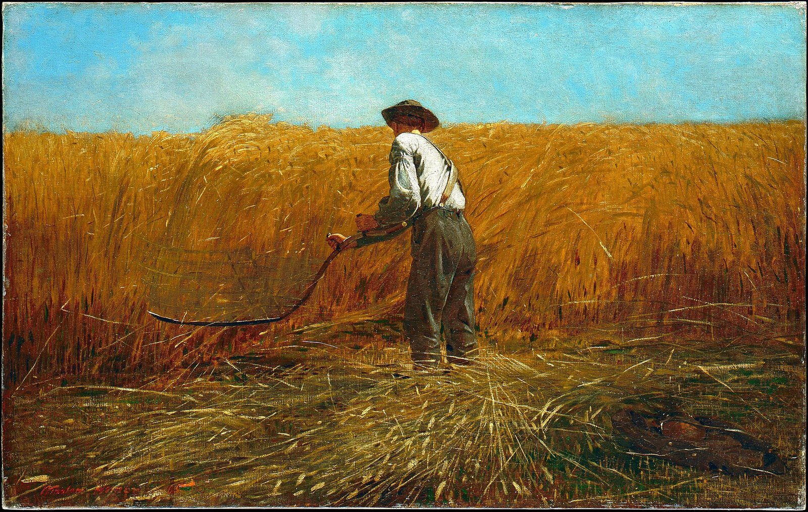

Green Shift at Work

Télécharger la séquence
Anglais · Terminale bac pro · toutes filières · LVA, B1 vers B1+ (Help : A2+ vers B1 ; Going further : vers B2)
Format retenu : lien avec le chef-d’œuvre. Ce format convient au BO, qui prévoit explicitement que les professeurs de langue contribuent au chef-d’œuvre présenté à l’examen.
Six lessons de 55 minutes, minutées sur 52 minutes. Les élèves documentent, en anglais, un geste, un objet ou une organisation déjà engagée, ou clairement projetée, dans leur chef-d’œuvre (réemploi, moins de déchets, soin des outils, énergie, accueil plus sobre). Cette séquence est écrite pour le bac pro du ministère de l’Éducation nationale. Elle n’est pas une séquence agricole : les exemples viennent de l’atelier, de la cuisine, du magasin, du salon, du bureau, du soin ou du service.
Question directrice : What change at work is worth defending, in English, as part of your chef-d’œuvre?
Présentation (version prof)
Public : Terminale baccalauréat professionnel, lycée professionnel (ministère de l’Éducation nationale).
Programme : BO spécial n° 5 du 11 avril 2019. Thèmes : grandes problématiques d’actualité (environnement, transition), engagement, vie professionnelle (présenter un projet, un produit, un service, rendre compte d’une réalisation). Le professeur de langue travaille avec, et non à la place de, l’équipe du chef-d’œuvre.
Les cinq activités langagières sont travaillées. L’oral de la lesson 5 prépare une présentation que l’élève pourra, le cas échéant, raccourcir ou réemployer pour le jury du chef-d’œuvre, en anglais si cela est souhaité, ou comme réserve de lexique.
Si un élève n’a pas encore de chef-d’œuvre avancé, il documente une amélioration réelle et limitée de son lieu de formation, sans inventer un projet de toutes pièces.
Chaque lesson dure 55 minutes, minutée sur 52 minutes, avec un point d’arrêt et une sortie de secours de 8 minutes. Une seule progression pour toute la classe : les encadrés Help aident les élèves encore vers B1 ; les encadrés Going further proposent une tâche plus longue, vers B2. La différenciation se fait dans la lesson, pas par des parcours séparés.
Ordre habituel d’une lesson : rappel et flashcards ; question du jour ; document (texte, image ou audio) lu avec la spirale de Gorse ; Expanding your vocabulary ; Étude de la langue (un point utile pour la tâche du jour) ; exercices, du repérage à la production, avec corrigés en Version prof ; tâche d’oral, y compris l’interaction, pour que chacun parle au moins une fois ; trace écrite ; homework.
En l’absence d’enregistrement audio, lisez le transcript à voix haute trois fois, avec une minute entre les lectures, comme à l’épreuve.
Lessons at a glance
| Lesson | Titre | Question du jour |
|---|---|---|
| 1 | A New Field | What does it mean to start a new task, with old tools? |
| 2 | One Change at Work | Which change is small enough to explain clearly? |
| 3 | Words for a Real Change | How do you describe a before, and an after? |
| 4 | Document Your Chef-d’œuvre | What three facts, and one difficulty, will you show? |
| 5 | Present the Link | Can you defend your change, then answer questions? |
| 6 | CCF blanc | Entraînement à l’épreuve, Version prof |
Spirale de Gorse
Méthode conçue par Madame Carole Paoli Pompougnac. Le nom rend hommage à sa grand-mère par alliance, Madame Armandine Gorse, avec un S. On gravit un texte, un audio ou une image comme une pente : chaque tour est une prise plus haute. On part de ce qui saute aux yeux, puis l'attention se resserre, jusqu'à la pointe, le sommet où l'essentiel se laisse voir. Quatre tours, puis la pointe. Dans chaque lesson, appliquez la spirale au document principal (texte, image ou audio). Les réponses détaillées restent en Version prof.

Je remarque (I notice)
Ce qui saute aux yeux, la première impression.
I notice… / This is about…
Je repère (I spot)
Un détail, un passage, un élément plus net.
I spot… / The key word is…
Je comprends (I understand)
Ce que ces éléments permettent de comprendre.
This shows that… / They have in common…
J'anticipe (I anticipate)
La visée du texte, ce qu'il faut en faire.
The text wants me to… / I anticipate…
Je trouve le sens (I find the meaning)
La pointe, le point final : l'essentiel que l'on peut défendre, et sa limite. Ce point final cadre et recentre la démarche. Il évite le hors-sujet et les conclusions hâtives qui fausseraient l'analyse du texte. On peut finir par une brève ouverture sur un autre débat.
The point is… / I keep to the text: … / I stay focused on… / Beyond this, other questions may arise and open up further exploration.
Exemple travaillé, sur The Veteran in a New Field de Winslow Homer (version prof)
| Tour | Question du professeur | Réponse attendue | Ce qui se resserre |
|---|---|---|---|
| 1. Je remarque | Qu’est-ce qui saute aux yeux ? | Un homme seul, dans un champ de blé, avec une faux, sous un ciel clair. | Un travail manuel, un espace ouvert, pas une usine. |
| 2. Je repère | Que voit-on au premier plan, près de lui ? | Une veste militaire abandonnée, ou un residual de l’uniforme, selon la lecture de l’œuvre ; la faux est l’outil du jour. | L’homme a changé de tâche : d’un rôle à un autre, avec un outil différent. |
| 3. Je comprends | Que permet de comprendre ce changement d’outil ? | Reprendre un travail, ou en commencer un autre, demande un geste juste, et du temps. | On relie la toile au chef-d’œuvre : un nouveau geste, pas un discours général sur la planète. |
| 4. J’anticipe | Que ferons-nous de cette toile ? | S’en servir pour parler d’un changement précis au travail, sans solennité inutile. | On anticipe le hors-sujet : une leçon sur la guerre de Sécession seulement, ou un discours sans exemple. |
| 5. Je trouve le sens | L’essentiel, et sa limite ? | Un nouveau geste au travail peut être simple, et valoir d’être expliqué. Limite : une image ne prouve pas que le geste est utile ; encore faut-il des faits. | Une phrase qui ouvre la documentation du chef-d’œuvre. |
Lesson 1 · A New Field
Activités : CE, PE, PO, interaction.
By the end of this lesson, I can: describe the painting, and say what a ‘new field’ could mean in my workplace.
Question du jour : What does it mean to start a new task, with old tools?
Spirale de Gorse
Dans chaque lesson, appliquez la spirale au document principal (texte, image ou audio). Les réponses détaillées restent en Version prof.
Je remarque (I notice)
Ce qui saute aux yeux, la première impression.
I notice… / This is about…
Je repère (I spot)
Un détail, un passage, un élément plus net.
I spot… / The key word is…
Je comprends (I understand)
Ce que ces éléments permettent de comprendre.
This shows that… / They have in common…
J'anticipe (I anticipate)
La visée du texte, ce qu'il faut en faire.
The text wants me to… / I anticipate…
Je trouve le sens (I find the meaning)
La pointe, le point final : l'essentiel que l'on peut défendre, et sa limite. Ce point final cadre et recentre la démarche. Il évite le hors-sujet et les conclusions hâtives qui fausseraient l'analyse du texte. On peut finir par une brève ouverture sur un autre débat.
The point is… / I keep to the text: … / I stay focused on… / Beyond this, other questions may arise and open up further exploration.
Minutage (52 minutes)
| Minutes | Étape | Activité |
|---|---|---|
| 0 à 6 | Diagnostic, non noté : Name one thing your class already does to waste less, or to take more care. | PE |
| 6 à 22 | Spirale de Gorse sur la toile de Homer. | CE, PO |
| 22 à 30 | Expanding your vocabulary. | CE |
| 30 à 38 | Étude de la langue : used to / now ; a new task. | PE |
| 38 à 46 | Interaction : What could ‘a new field’ mean in our workplace? | PO, interaction |
| 46 à 52 | Trace écrite, homework. | PE |
Point d’arrêt (minute 46). Une interprétation professionnelle a été dite, pas seulement une description.
Help : utilisez I notice, he has a new task, in our workplace we could. Going further : reliez un détail de la toile (the tool, the open field) à un geste précis de votre métier, en deux phrases.
Sortie de secours (8 minutes). Trois phrases : I notice a man with a scythe. He has a new task. In our workplace, a new field could be…
Expanding your vocabulary
| Word | Meaning | Example |
|---|---|---|
| waste | what we throw away | We want to reduce food waste in the kitchen. |
| to reuse | to use again | We reuse the jars for storage. |
| a change | something that becomes different | A small change can be enough. |
| to take care of | to look after | We take more care of the tools. |
| energy | power we use (electricity, gas, fuel) | We switch off the lights to save energy. |
| a fact | something you can show or count | I need three facts, not a slogan. |
| worth defending | useful enough to explain and protect | This change is worth defending. |
Homework
Huit mots. En cinq lignes, reliez la toile à un geste possible dans votre lieu de formation (atelier, cuisine, magasin, salon, bureau ou service).
Lesson 2 · One Change at Work
Activités : CO, CE, PE, PO.
By the end of this lesson, I can: understand a short account of a workplace change, and choose one change I can explain.
Question du jour : Which change is small enough to explain clearly?
Spirale de Gorse
Dans chaque lesson, appliquez la spirale au document principal (texte, image ou audio). Les réponses détaillées restent en Version prof.
Je remarque (I notice)
Ce qui saute aux yeux, la première impression.
I notice… / This is about…
Je repère (I spot)
Un détail, un passage, un élément plus net.
I spot… / The key word is…
Je comprends (I understand)
Ce que ces éléments permettent de comprendre.
This shows that… / They have in common…
J'anticipe (I anticipate)
La visée du texte, ce qu'il faut en faire.
The text wants me to… / I anticipate…
Je trouve le sens (I find the meaning)
La pointe, le point final : l'essentiel que l'on peut défendre, et sa limite. Ce point final cadre et recentre la démarche. Il évite le hors-sujet et les conclusions hâtives qui fausseraient l'analyse du texte. On peut finir par une brève ouverture sur un autre débat.
The point is… / I keep to the text: … / I stay focused on… / Beyond this, other questions may arise and open up further exploration.
Minutage (52 minutes)
| Minutes | Étape | Activité |
|---|---|---|
| 0 à 6 | Rappel. | PO |
| 6 à 20 | Écoute trois fois. Compte rendu en français. | CO |
| 20 à 32 | Lecture de trois exemples courts (cuisine, salon, atelier). Choix d’un angle. | CE |
| 32 à 40 | Étude de la langue : because / so that / in order to. | PE |
| 40 à 48 | Oral : My change is… because… | PO |
| 48 à 52 | Homework. |
Point d’arrêt (minute 48). Chaque élève a choisi un changement limité.
Help : complétez Before we… Now we… I can show… Going further : ajoutez une difficulté honnête (When we are in a hurry…).
Sortie de secours (8 minutes). Un seul exemple, trois phrases modèles.
Transcript (version prof)
My name is Alex, and I am in my final year. For our chef-d’œuvre, we did not want a big speech about the planet. We wanted one change in the workshop: we now sort metal offcuts in two bins, and we weigh them every Friday. Before, everything went into the same skip. In two months we have reused about a third of the offcuts for smaller jobs. It is not perfect: someone still throws a piece in the wrong bin when we are in a hurry. But I can show the numbers, and I can show a part we made from an offcut. That is what I will explain, in English as well, if I am asked.
Corrigé CO (version prof). Alex, année de Terminale. Pour le chef-d’œuvre, un seul changement à l’atelier : deux bacs pour les chutes de métal, pesée le vendredi. Avant, tout allait au même benne. En deux mois, environ un tiers des chutes réemployées pour de plus petites pièces. Ce n’est pas parfait : dans la précipitation, il arrive qu’on se trompe de bac. Alex peut montrer des chiffres, et une pièce faite à partir d’une chute. Il pourra l’expliquer aussi en anglais, si on le lui demande.
Trois exemples (texte d’entraînement)
Kitchen: we weigh food waste on Friday, and we have changed two recipes that produced too much leftover. Salon: we use refillable bottles for one product, and we keep a simple tally. Office or shop: we have stopped printing the daily list, and we use one shared screen.
Homework
Choisissez votre changement (chef-d’œuvre ou amélioration réelle du lieu de formation). Écrivez : before, after, one number or one object you can show.
Lesson 3 · Words for a Real Change
Activités : CE, PE, PO, interaction.
By the end of this lesson, I can: write a before-and-after paragraph, with one fact and one difficulty.
Question du jour : How do you describe a before, and an after?
Spirale de Gorse
Dans chaque lesson, appliquez la spirale au document principal (texte, image ou audio). Les réponses détaillées restent en Version prof.
Je remarque (I notice)
Ce qui saute aux yeux, la première impression.
I notice… / This is about…
Je repère (I spot)
Un détail, un passage, un élément plus net.
I spot… / The key word is…
Je comprends (I understand)
Ce que ces éléments permettent de comprendre.
This shows that… / They have in common…
J'anticipe (I anticipate)
La visée du texte, ce qu'il faut en faire.
The text wants me to… / I anticipate…
Je trouve le sens (I find the meaning)
La pointe, le point final : l'essentiel que l'on peut défendre, et sa limite. Ce point final cadre et recentre la démarche. Il évite le hors-sujet et les conclusions hâtives qui fausseraient l'analyse du texte. On peut finir par une brève ouverture sur un autre débat.
The point is… / I keep to the text: … / I stay focused on… / Beyond this, other questions may arise and open up further exploration.
Minutage (52 minutes)
| Minutes | Étape | Activité |
|---|---|---|
| 0 à 8 | Mise en commun des choix. | PO |
| 8 à 22 | Lecture d’un paragraphe modèle. Spirale de Gorse. | CE |
| 22 à 32 | Étude de la langue : comparatives (less waste, more care, fewer copies). | PE |
| 32 à 44 | Rédaction du paragraphe (80 à 100 mots). | PE |
| 44 à 50 | Interaction : posez une question difficile à un camarade (What is still not working?). | interaction |
| 50 à 52 | Homework. |
Point d’arrêt (minute 44). Le paragraphe existe, avec une difficulté, pas seulement un succès.
Sortie de secours (8 minutes). Paragraphe à trous : before, now, one fact, one difficulty.
Paragraphe modèle
Before, we printed a new list every morning, and we threw the old ones away. Now we use one shared screen at the counter. In three weeks we have used about two packets of paper, not eight. It is still difficult when the screen freezes, so we keep one paper copy in a folder. The change is small, but it is worth defending, because we can show the packets, and the folder.
Homework
Ajoutez une photographie ou un objet (bac, bouteille, pièce, liste) que vous pourrez montrer, sans photographier un camarade sans son accord.
Lesson 4 · Document Your Chef-d’œuvre
Activités : PE, CE, PO.
By the end of this lesson, I can: prepare a three-point card (three facts, one difficulty, one object or image).
Question du jour : What three facts, and one difficulty, will you show?
Spirale de Gorse
Dans chaque lesson, appliquez la spirale au document principal (texte, image ou audio). Les réponses détaillées restent en Version prof.
Je remarque (I notice)
Ce qui saute aux yeux, la première impression.
I notice… / This is about…
Je repère (I spot)
Un détail, un passage, un élément plus net.
I spot… / The key word is…
Je comprends (I understand)
Ce que ces éléments permettent de comprendre.
This shows that… / They have in common…
J'anticipe (I anticipate)
La visée du texte, ce qu'il faut en faire.
The text wants me to… / I anticipate…
Je trouve le sens (I find the meaning)
La pointe, le point final : l'essentiel que l'on peut défendre, et sa limite. Ce point final cadre et recentre la démarche. Il évite le hors-sujet et les conclusions hâtives qui fausseraient l'analyse du texte. On peut finir par une brève ouverture sur un autre débat.
The point is… / I keep to the text: … / I stay focused on… / Beyond this, other questions may arise and open up further exploration.
Minutage (52 minutes)
| Minutes | Étape | Activité |
|---|---|---|
| 0 à 10 | Relecture des paragraphes, choix de trois faits. | CE, PE |
| 10 à 22 | Étude de la langue : First,… Second,… The difficulty is… | PE |
| 22 à 40 | Fiche mots-clés et choix de l’image ou de l’objet (l’œuvre de Homer peut servir de seconde image, pas de preuve du geste). | PE |
| 40 à 48 | Essai à voix basse, cinq minutes, chronométré. | PO |
| 48 à 52 | Homework. |
Point d’arrêt (minute 40). La fiche existe.
Sortie de secours (8 minutes). Trois faits dictés sur l’exemple d’Alex, une difficulté.
Homework
Répétez la présentation sans lire. Demain, cinq minutes, puis des questions.
Lesson 5 · Present the Link
Activités : PO, interaction, PE.
By the end of this lesson, I can: present my change in five minutes, and answer questions, as a language link to the chef-d’œuvre.
Question du jour : Can you defend your change, then answer questions?
Spirale de Gorse
Dans chaque lesson, appliquez la spirale au document principal (texte, image ou audio). Les réponses détaillées restent en Version prof.
Je remarque (I notice)
Ce qui saute aux yeux, la première impression.
I notice… / This is about…
Je repère (I spot)
Un détail, un passage, un élément plus net.
I spot… / The key word is…
Je comprends (I understand)
Ce que ces éléments permettent de comprendre.
This shows that… / They have in common…
J'anticipe (I anticipate)
La visée du texte, ce qu'il faut en faire.
The text wants me to… / I anticipate…
Je trouve le sens (I find the meaning)
La pointe, le point final : l'essentiel que l'on peut défendre, et sa limite. Ce point final cadre et recentre la démarche. Il évite le hors-sujet et les conclusions hâtives qui fausseraient l'analyse du texte. On peut finir par une brève ouverture sur un autre débat.
The point is… / I keep to the text: … / I stay focused on… / Beyond this, other questions may arise and open up further exploration.
Minutage (52 minutes)
| Minutes | Étape | Activité |
|---|---|---|
| 0 à 6 | Ordre de passage, rappel : pas de lecture d’un texte rédigé. | |
| 6 à 46 | Présentations (cinq minutes) et questions (jusqu’à cinq minutes, selon le temps). | PO, interaction |
| 46 à 50 | Autoévaluation. | PE |
| 50 à 52 | Homework : relire pour le blanc. |
Point d’arrêt. Les élèves non entendus passent en début de lesson 6, ou sur un créneau prévu avec l’équipe du chef-d’œuvre.
Help : trois points, une image ou un objet, une phrase de limite. Going further : répondez à l’objection « it is only a detail » en une minute.
Sortie de secours (8 minutes). Trois élèves, une minute chacun : before, after, one fact.
Questions possibles : What is still difficult? Why is this part of your chef-d’œuvre? What would you change next? How do you know your number is right? Why did you choose Homer’s painting as a starting point?
Lesson 6 · Évaluation blanche au format du CCF et de l’épreuve ponctuelle (version prof)
Rappel du format officiel (arrêté du 17 juin 2020, annexe V ; grilles : note de service du 24 novembre 2021, BO n° 47 du 16 décembre 2021) :
- Situation A, écrite, 1 heure : compréhension de l’oral (document de 1 min 30 au plus, entendu trois fois, une minute entre les écoutes, compte rendu en français) ; compréhension de l’écrit (document authentique inconnu de 15 lignes de 70 caractères au plus, compte rendu en français) ; expression écrite (deux sujets au choix, l’un sur la vie quotidienne, l’autre sur la vie professionnelle, 100 à 120 mots au moins).
- Situation B, orale, 10 minutes : expression orale en continu, 5 minutes au plus, sur un travail, un projet, un produit, un service ou une expérience professionnelle, sans lecture ; notes et une image autorisées ; puis interaction, 5 minutes au plus.
- Élèves des établissements publics ou privés sous contrat et apprentis des CFA habilités : CCF. Autres candidats : épreuve ponctuelle, mêmes activités, une partie écrite d’une heure et une partie orale de dix minutes, au dernier trimestre. Les deux temps sont indépendants.
Chaque activité langagière est notée sur 20, puis compte pour un cinquième de la note finale. Niveau attendu : B1+ en LVA, A2+ en LVB.
Ce sujet sert d’entraînement blanc en Terminale. Version prof seulement, sauf la rubrique « L’élève ne peut pas venir en classe ou est hospitalisé ».
Transcript CO (version prof) :
I am Patrice, from the salon group. For our chef-d’œuvre we chose one product line, a shampoo, and we moved to refillable bottles. Before, we threw away about twenty plastic bottles a month. Now the clients who agree bring the bottle back, and we keep a tally on a sheet next to the till. In two months, thirty-two bottles have come back. It is not everyone: some clients forget, and we still buy small bottles for them. I can show the sheet, and I can show an empty bottle we reuse. That is the change I can defend, in French and in English.
Corrigé CO (version prof). Patrice, groupe du salon. Pour le chef-d’œuvre, une gamme : shampoing en bouteilles rechargeables. Avant, environ vingt bouteilles par mois jetées. Désormais, les clients qui acceptent rapportent la bouteille ; un décompte à côté de la caisse. En deux mois, trente-deux bouteilles revenues. Ce n’est pas tout le monde : certains oublient, de petites bouteilles restent achetées. Patrice peut montrer la feuille et une bouteille réemployée. C’est le changement qu’il peut défendre, en français et en anglais.
Texte CE (texte d’entraînement) :
A chef-d’œuvre needs more than a good intention. It needs a change you can show: an object, a number, a difficulty. In this sequence we have started from Winslow Homer’s veteran, who begins a new task with a simple tool. We have listened to a workshop and a salon, and we have prepared a five-minute talk. The English lesson does not replace the chef-d’œuvre. It gives you the words to explain it to someone who does not share your classroom, or your language.
Questions : De quoi un chef-d’œuvre a-t-il besoin, selon le texte ? Quel rôle joue la toile de Homer ? Que prépare la séquence d’anglais, et que ne remplace-t-elle pas ?
Corrigé CE (version prof). Il faut un changement que l’on peut montrer (objet, chiffre, difficulté), pas seulement une intention. Homer sert d’ouverture : une nouvelle tâche, un outil simple. La séquence prépare un oral de cinq minutes. Elle ne remplace pas le chef-d’œuvre : elle donne les mots pour l’expliquer à quelqu’un qui n’est pas de la classe, ou qui ne parle pas français.
Expression écrite. Sujet 1, vie professionnelle : Present your change (100 to 120 words or more): before, after, one fact, one difficulty. Sujet 2, vie quotidienne : Explain to a friend one change you have made at home or at school to waste less, and say what is still difficult.
Situation B
Présentez, en cinq minutes, le lien entre votre chef-d’œuvre, ou votre amélioration du lieu de formation, et cette séquence : trois faits, une difficulté, un objet ou une image. Puis répondez aux questions.
Questions : What is still not working? Why is a small change worth defending? What would you say to a visitor who thinks it is only a detail?
Grille nationale bac pro LVA (BO n° 47 du 16 décembre 2021, annexe 4), version prof
Chaque activité langagière est notée sur 20, puis ramenée pour un cinquième de la note finale. Repères de classe, alignés sur le B1+ visé en LVA (A2+ en LVB) :
| Activité | 1 à 5 | 6 à 10 | 11 à 15 | 16 à 20 |
|---|---|---|---|---|
| CO | Quelques mots isolés | Le sujet général est repéré | Les informations principales sont rendues en français | L’essentiel, des détails et le point de vue sont rendus |
| CE | Quelques éléments isolés | Le thème et quelques faits | Les informations principales, liées entre elles | L’essentiel, des détails et l’implicite |
| PE | Hors sujet ou trop court | Sujet abordé, langue encore hésitante | Sujet traité, 100 mots au moins, langue compréhensible | Argument nuancé, lexique professionnel, langue assez sûre |
| PO (continu et interaction) | Lecteur, propos très court | Présente avec aide, répond peu | Présente sans lire, répond de façon simple | Présente clairement, interagit, lexique de la séquence |
L’élève ne peut pas venir en classe ou est hospitalisé
L’épreuve blanche peut se faire à la maison ou à l’hôpital, sans aide, en respectant la durée. L’élève note l’heure de début et de fin. Le document audio, ou le texte lu par l’enseignante et enregistré, est déposé sur l’ENT ; l’élève l’écoute trois fois, avec une minute de pause entre les écoutes, sans revenir en arrière. L’oral se fait par enregistrement (présentation), puis par un échange au téléphone ou en visioconférence avec l’enseignante, ou à défaut par trois questions écrites envoyées après l’enregistrement. Version courte (fatigue) : une seule partie de l’écrit et la présentation orale.
Sources
- Programme de langues vivantes, BO spécial n° 5 du 11 avril 2019, y compris la contribution possible au chef-d’œuvre.
- Épreuve de langue vivante, arrêté du 17 juin 2020, annexe V ; grilles, BO n° 47 du 16 décembre 2021.
- Winslow Homer, The Veteran in a New Field, 1865, The Metropolitan Museum of Art, New York, 67.187.131, domaine public. Image : Wikimedia Commons.
© 2026 Madame Carole Paoli Pompougnac · CC BY-NC-SA 4.0